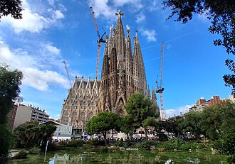
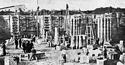

El Templo Expiatorio de la Sagrada Familia, conocido simplemente como la Sagrada Familia, es una basílica católica de Barcelona (España), diseñada por el arquitecto Antoni Gaudí. Iniciada en 1882, todavía está en construcción. Es la obra maestra de Gaudí y el máximo exponente de la arquitectura modernista catalana. Es el monumento más visitado de España, y es la iglesia más visitada de Europa tras la basílica de San Pedro del Vaticano. El 30 de octubre de 2025 se convirtió en la iglesia más alta del mundo.

La idea de construir un templo expiatorio dedicado a la Sagrada Familia fue del librero Josep Maria Bocabella, inspirado por el sacerdote Josep Manyanet —canonizado en 2004—, fundador de las congregaciones religiosas Congregación de Hijos de la Sagrada Familia y Congregación de Misioneras Hijas de la Sagrada Familia de Nazaret, encargadas de promover el culto a la Sagrada Familia y fomentar la educación cristiana de niños y jóvenes. En 1869, Manyanet publicó El espíritu de la Sagrada Familia, donde lanzaba la idea de un templo en Barcelona dedicado a su culto. Para tal fin, Bocabella fundó en 1866 la Asociación Espiritual de Devotos de San José, con el objetivo de recaudar fondos. En 1871, Bocabella visitó al papa Pío IX en Roma y, en el seno de ese viaje, visitó el santuario de Loreto (Ancona), que se supone guarda la que fue la casa de José y María en Nazaret, templo que le sirvió de inspiración para la proyectada iglesia barcelonesa.
